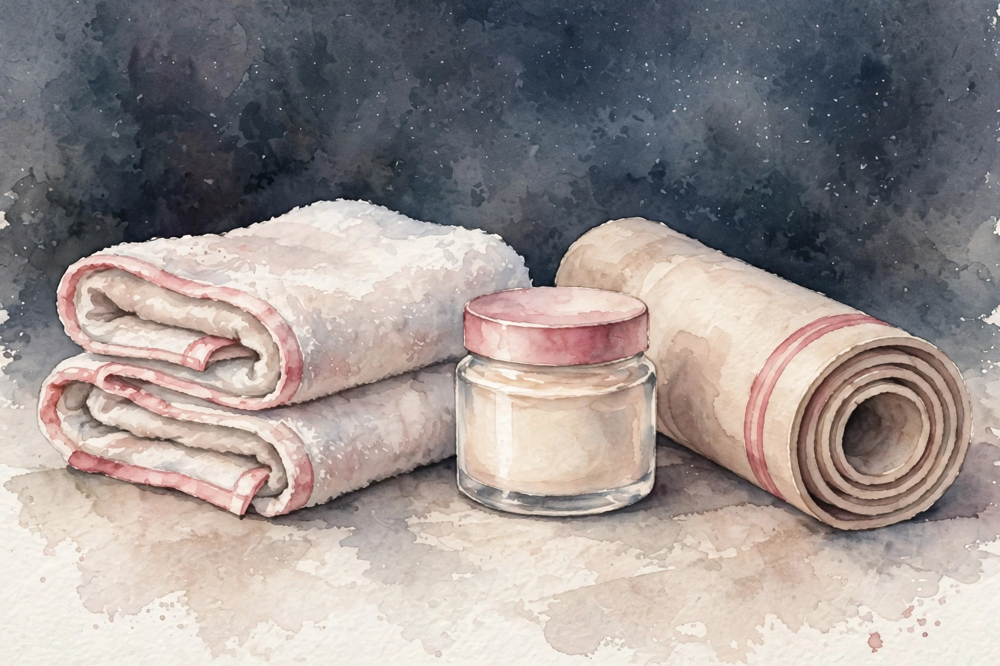

トップ ＞ ボディケア ＞ ストレッチと組み合わせる夜のボディケア
ストレッチと組み合わせる夜のボディケア

夜のボディケアに、ストレッチを組み合わせたいという方は少なくありません。施術の現場でも、ケアと体の動かし方は、切り離せない関係にあります。この記事では、入浴後の夜の時間に、クリームを塗るケアとストレッチをどう並べるか、その組み立て方を整理します。手順が決まれば、夜の時間は「なんとなく」から「自分の型」に変わります。
順番は「入浴→クリーム→ストレッチ」
私の組み立ては、入浴で体が温まったあとに、まずクリームを塗り、そのあとにストレッチをする順番です。クリームを塗る行為そのものが、手のひらで体に触れる時間になります。脚なら足先から太ももへ、腕なら手首から肩へと、なでるように伸ばしていきます。塗る順番が、そのまま体の状態を確かめる順番にもなります。
塗った直後の肌は滑りやすいので、床に座って行うストレッチから始めるのが安全です。立ち姿勢の動きは、足元が安定していることを確かめてからにします。順番を固定しておくと、夜の流れの中で迷いが減ります。マットを敷く場所も決めておくと、始めるまでの手間が小さくなります。
ストレッチは「痛くない範囲」が原則
ストレッチは、伸ばして気持ちよいと感じる範囲で行うのが原則です。痛みをがまんして伸ばす必要はありません。呼吸を止めず、ゆっくりと動くこと。反動をつけず、姿勢を保つこと。この2つが、夜のセルフケアとしての基本の形です。回数や秒数を厳密に決めるより、体の感覚に合わせて調整する方が、夜のケアとしては続けやすくなります。
部位ごとに詳しいストレッチの図解は、姉妹サイトにまとめています。この記事では、ケアとの組み合わせ方に絞って案内します。
部位ごとのセルフケアは、姉妹サイトにまとめています
肩こりや腰の張りなど、部位・症状ごとのストレッチの図解は、姉妹サイト「症状別セルフケア資料｜ストレッチ図解」にまとめています。夜のケアの組み立てと合わせてどうぞ。
時間がない日は、短縮版を用意する
毎日フルコースである必要はありません。忙しい日は、脚だけクリームを塗って、ふくらはぎのストレッチだけ、という短縮版で十分です。「フル版」と「短縮版」の2つを用意しておくと、ゼロの日が減ります。短縮版の内容も先に決めておくことが大切で、「今日は短縮版」と選べること自体が、続けるための仕組みです。
夜のケアは、翌日のためというより、その日の終わりを整える時間です。手順が決まっていると、体も気持ちも切り替えやすくなります。まずは一週間、同じ順番で続けてみてください。一週間続けば、その型が自分のものになります。
この記事は、日常のセルフケアの組み立ての紹介であり、医療行為ではありません。痛みやしびれなどの症状がある場合は、医療機関にご相談ください。
組み合わせる部位の順番も、先に決めておきます。私は、クリームを塗った部位から順にストレッチへ進む流れにしています。脚を塗ったら脚のストレッチ、腕を塗ったら腕のストレッチ、という対応にしておくと、塗る工程と動かす工程が一続きになります。部位ごとの対応を頭の中に作っておくイメージです。
呼吸も、手順の一部です。伸ばすときに息を吐く、保つときは自然に呼吸を続ける。この決め方をしておくと、動きのリズムが安定します。夜の時間は、照明を少し落とすなど、環境を整えることも、切り替えの助けになります。
続けるための記録として、その日の内容を簡単にメモする方もいます。フル版か短縮版か、それだけの記録でも、自分の型の見直しに使えます。記録は、続けるための小さな道具です。
セラフィナ「塗って、伸ばして、おしまい。短縮版も用意しておくと続けやすいね」